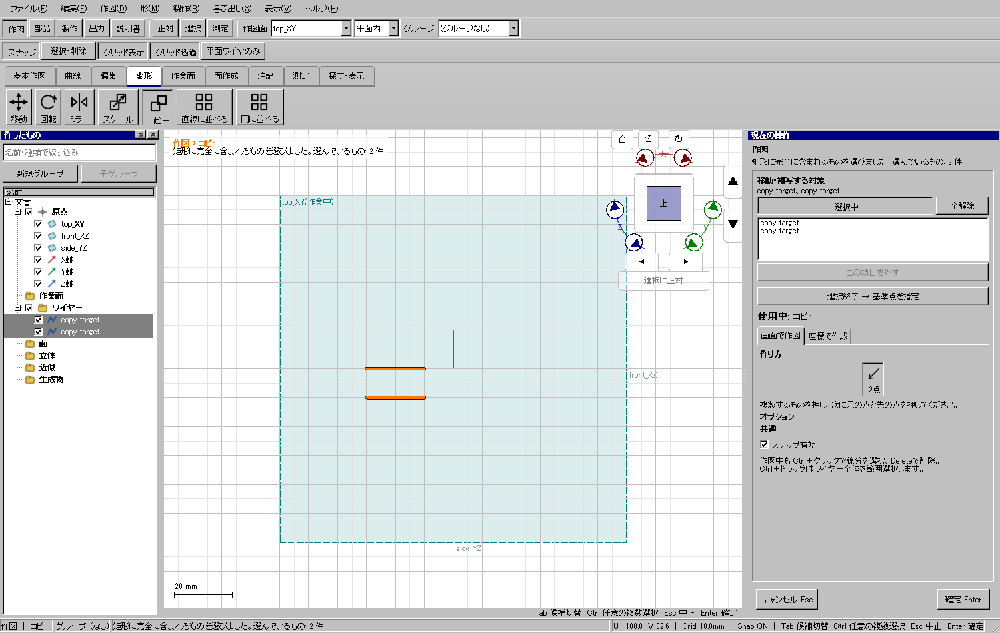
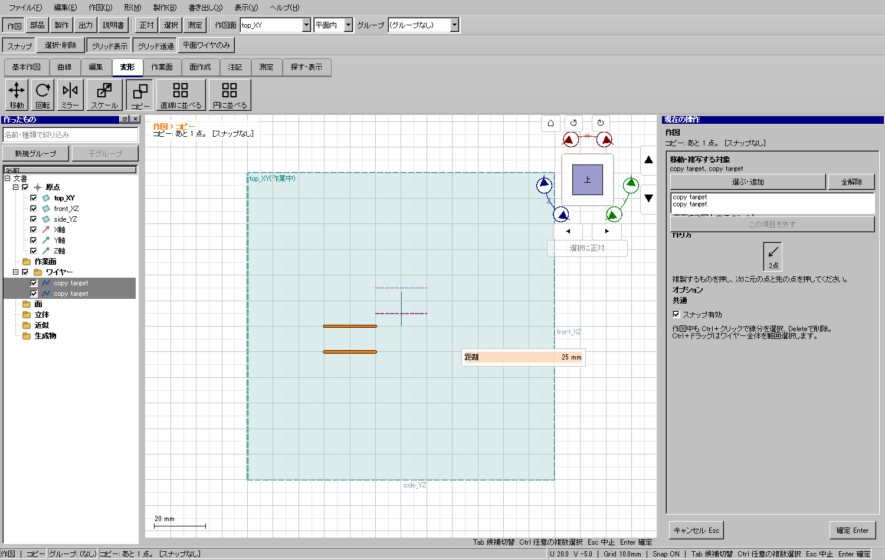

115系の接触を実形状で直す
床板からのスカート支持腕、屋根に沿うクーラーサドル、ガラスと窓枠の接着面・回込窓の受けを追加。通常233／分割240部品、各93取付、各476点、全対候補414／407組を確認した。部品を離す3試験は全て不合格。最終アプリでも通常版233部品・476点・93取付・414干渉候補を独立再計算した。


取付を見分けるため部位を色分けした実CAD形状。模型は実測確定品ではなく、実印刷・接着強度・走行は未試験。モデル・画像・組立・検査 ／ 最終アプリでの再計算
配布ゲート：passed。時刻・ケース・SHAを含む記録 ／ 全体ゲートの証拠
検証済みCADの起動ファイル ／ 115系・部位別STL/STEP/CAD一式ZIP
配布版で模型を表示できることも確認した。配布先変更後の初回はキャッシュを使わず約114.5秒、次の起動はキャッシュヒットを確認してプロセス全体19.1秒（読み込み完了まで15.1秒）。異なる条件なので修正前後の速度比較とはしない。最初の温計測の期待不一致も保全し、初回を高速キャッシュの結果として報告しない。
右の「選ぶ・追加」から複数クリック／範囲選択し、「選択終了 → 基準点を指定」で配置へ進む。Ctrlで追加・解除もできる。基準点後は紫の破線が追従し、距離の数値入力・Enterと一致する。複数コピーは1回のUndo／Redoで戻せる。


Windows版の実Qt画面。対象選択のボタンが潰れる状態も修正し、最低高を試験した。OSマウスで全工程を一巡した記録とは区別する。操作手順
| 同じ1000本・478×594の条件 | 変更前 | 最終版 |
|---|---|---|
| 線の確定・中央値 | 100.081 ms | 29.111 ms |
| 線の確定・p95 | 134.590 ms | 30.360 ms |
| カーソル入力・中央値 | 4.792 ms | 3.987 ms |
| 12本追加時のExplorer全体再構築 | 12回 | 0回 |
線／点の直接追加は既存行を保って追記する。新行のUUID索引も登録し、表示チェック・名前変更・畳み・保存を確認した。Undoや編集では通常の全面更新を維持し、同じIDの数値が変わっても右ペインを更新する。断面／局所表示のスナップ除外判定も毎曲線の線形検索から集合照合へ変えた。
単発計測の同期Qt入力で、GPU描画のfpsではない。2,000本の別条件ではHover約21 ms、確定約125 msが残った。常時60 fps達成や全処理高速化済みとは主張しない。
| 重点実行 | 件数 | 失敗 |
|---|---|---|
| baseline-copy | 2 | 2 |
| round2-copy | 2 | 0 |
| round3-copy | 4 | 0 |
| round3-drawing-fixed | 1 | 0 |
| round3-explorer | 9 | 0 |
| round4-lifecycle | 9 | 0 |
| round4-owner-fixed | 1 | 0 |
| round4-explorer | 20 | 0 |
| round4-layout | 4 | 0 |
| round4-drawing-accepted | 1 | 0 |
| round4-tree-accepted | 9 | 0 |
| round4-section | 1 | 0 |
| round4-isolation | 1 | 0 |
初期の失敗や測定を削除せず保存。件数は実行ごとのもので、重複を足して独立機能数とは扱わない。0件のフィルター、古い接触結果、欠落、失敗は成功として受理しない。
床板からのスカート支持腕、屋根に沿うクーラーサドル、ガラスと窓枠の接着面・回込窓の受けを追加。通常233／分割240部品、各93取付、各476点、全対候補414／407組を確認した。部品を離す3試験は全て不合格。最終アプリでも通常版233部品・476点・93取付・414干渉候補を独立再計算した。
取付を見分けるため部位を色分けした実CAD形状。模型は実測確定品ではなく、実印刷・接着強度・走行は未試験。モデル・画像・組立・検査 ／ 最終アプリでの再計算
新規UI補助：V2TransformPreview、V2DrawingCommit。新規試験：V2SelfTestCopyDrawing。Esc処理は既存のCursor実装へ移し、ViewportInputの肥大化を抑えた。模型の接触形状はfit_details、接触検証はnative exporter、負の試験はtest_attachment_fitへ分離した。
既存ファイルの削除なし。旧リリース・旧模型・ユーザー原本・別worktree・無関係の未追跡ファイルを保全。今回追加した説明画像は既存規約に合わせv2-copy-から始まる名前で登録した。